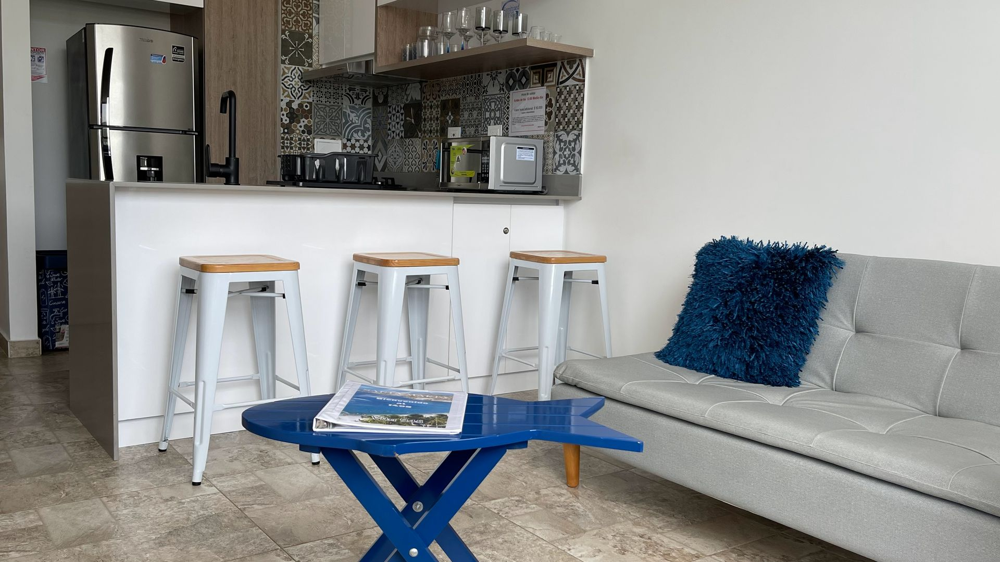

Manual de la casa
Bienvenidos a Santa Marta y El Rodadero.
Esperamos que disfruten la playa, las vistas y la estadía. Lean esto antes de llegar y guárdenlo por si lo necesitan después.
Antes de llegar
Todos los huéspedes deben estar registrados con seguridad del edificio antes de llegar. Unas 24 horas antes del check-in, el edificio enviará un WhatsApp con el enlace de registro. Cada huésped debe completar el formulario por separado.
Después de completar el formulario, cada huésped recibe un código QR. Guárdalo en el celular. Tendrás que mostrarlo en recepción al llegar.
Confirma tus horarios de check-in y check-out antes de llegar. Todos deben registrarse según los requisitos del edificio y de seguridad local. Solo los huéspedes registrados pueden entrar al edificio o usar las amenidades compartidas.
Entrada al edificio
Al llegar, ve a recepción y muestra tu código QR. El edificio cobra 18.000 COP por huésped por la manilla de acceso. Se paga directamente en recepción. Sin efectivo. La manilla es obligatoria para entrar al edificio y usar la piscina y las zonas comunes.
Quienes no tengan registro y manilla no podrán entrar. Cuando todos se hayan registrado y recibido sus manillas, enviamos las instrucciones del apartamento.
Acceso al apartamento
La tarjeta de acceso está en un lockbox seguro en la puerta. Recibirás las instrucciones y el código del lockbox cuando el registro del edificio esté completo.
Devuelve la tarjeta al lockbox cada vez que salgas, salvo que te indiquemos otra cosa. No compartas el código ni la tarjeta con nadie que no esté en la reserva.
Reponer la tarjeta cuesta 250.000 COP. Por eso, te sugerimos dejarla en el lockbox cada vez que salgas. Mantén las puertas con seguro cuando salgas del apartamento.
Wifi de alta velocidad
Nombre de la red: se entrega al llegar.
Contraseña: se entrega al llegar.
Si se cae la conexión, primero apaga y enciende el Wi-Fi del celular. Si sigue el problema, escríbenos.
Aire acondicionado
El apartamento tiene aire acondicionado. Mantén puertas y ventanas cerradas mientras esté encendido. Apágalo cuando salgas por un rato largo. Así evitas un consumo excesivo y ayudas a que el equipo funcione bien.
Smart TV
La TV es Smart TV. Puedes usar tus propias cuentas de streaming durante la estadía. Recuerda cerrar sesión en todas las cuentas personales antes del check-out.
Cocina
La cocina incluye nevera, estufa, microondas, ollas, platos, vasos y utensilios. Evita echar grasa, café molido, restos de comida u otros sólidos por el lavaplatos. Échalos a la basura.
Lavadora
Hay lavadora para los huéspedes. Usa solo una cantidad razonable de detergente. No la sobrecargues. Retira la ropa apenas termine el ciclo.
Agua caliente
Hay agua caliente en el apartamento. Si tienes problemas, escríbenos antes de tocar equipos o controles.
Piscina, jacuzzi, sauna y restaurante
Están en el piso 15, junto al restaurante de la terraza. Se necesita la manilla del edificio. Respeta horarios, aforo y reglas del edificio. Los niños siempre deben estar supervisados por un adulto. No lleves objetos de vidrio a la zona de la piscina.
Parqueadero
Hay parqueadero gratis para 1 carro. Confirma las instrucciones con nosotros antes de llegar para explicarte la entrada designada y los requisitos del edificio. No pares en espacios reservados para otros residentes o huéspedes.
Recordatorios de playa
La playa de Rodadero queda a unas dos cuadras. Al volver, lávate la arena de los pies antes de entrar al edificio o al apartamento. Así se mantienen limpios ascensores, pasillos y el apartamento.
Se exige camisa o ropa de cobertura en todas las zonas comunes. No está permitido circular por el edificio solo en vestido de baño.
Basura
Pon la basura en bolsas y usa el área designada del edificio. No dejes bolsas en el pasillo, en la zona de ascensores ni afuera de la puerta del apartamento.
Tarifas
Se suma una tarifa de limpieza única de 80.000 COP al total de la estadía.
Por separado, el edificio cobra 18.000 COP por huésped por la manilla en recepción (sin efectivo). Reponer una tarjeta perdida cuesta 250.000 COP.
Reglas de la casa
- Horario de silencio: 12 a.m. – 6 a.m.
- Sin fiestas ni eventos
- No fumar dentro del apartamento, en zonas comunes ni en ninguna área compartida del edificio
- Sin visitantes no registrados. Pide autorización con anticipación si esperas una visita.
- Capacidad máxima: 5 huéspedes
- Respeta a los vecinos, al personal del edificio y a los espacios comunes
- Reporta cualquier daño o problema de mantenimiento lo antes posible
- Mantén las puertas con seguro cuando salgas del apartamento
- El apartamento está en un edificio residencial de apartasuites. Respeta el horario de silencio, a los vecinos y todas las reglas del edificio.
- Hay 4 camas y el espacio para dormir es compacto. Es ideal para familias o grupos cómodos compartiendo el espacio.
- Las vistas a playa, ciudad y montañas pueden variar según el clima, la hora y la orientación de las ventanas.
- Cuida los muebles, electrodomésticos y demás elementos. Avísanos de inmediato si algo se daña, falta o no funciona bien.
Mascotas
Se permite una mascota bien entrenada. Trae registros al día. Debe estar entrenada para hacer sus necesidades afuera y no quedarse sola por periodos largos. La limpieza excesiva o los daños causados por la mascota son responsabilidad del huésped. No están cubiertos por la tarifa de limpieza única de 80.000 COP.
Fotografía y filmación comercial
Solo con aprobación previa. Cualquier sesión profesional o comercial de foto, video, contenido de marca, campaña de influencers o producción debe aprobarse por escrito antes de reservar. La solicitud debe incluir el propósito, número de asistentes, lista de equipos, espacios solicitados y horario.
Todos los participantes deben registrarse con seguridad del edificio y cumplir con la manilla. No se permiten sesiones en zonas comunes — lobby, pasillos, ascensores, piscina, jacuzzi, sauna, restaurante o exteriores — salvo aprobación escrita de la administración del edificio. Pueden aplicarse tarifas adicionales, depósito de seguridad y prueba de seguro de responsabilidad comercial.
Emergencias y soporte
Para una emergencia de policía, bomberos o asistencia médica, llama a la línea nacional de emergencias de Colombia: 123.
Para temas del apartamento, escríbenos por WhatsApp.
Para problemas de acceso al edificio, habla con recepción o con seguridad.
Checkout
Hora de salida: 11 a.m. A las 11 a.m., haz checkout en recepción.
Antes de irte:
- Apaga el aire acondicionado, las luces y los electrodomésticos
- Cierra las ventanas y deja la puerta con seguro
- Devuelve la tarjeta de acceso al lockbox
- Envíanos un mensaje cuando hayas hecho checkout
Deja la tarjeta en el lockbox. Reponerla cuesta 250.000 COP. Por eso te sugerimos dejarla en el lockbox cada vez que salgas.
Reservar
Reserva un apartamento bien organizado en Santa Marta.
Lee la guía de la casa y reserva tu estadía en El Rodadero — reglas claras, soporte del anfitrión y vista al mar a dos cuadras de la playa.